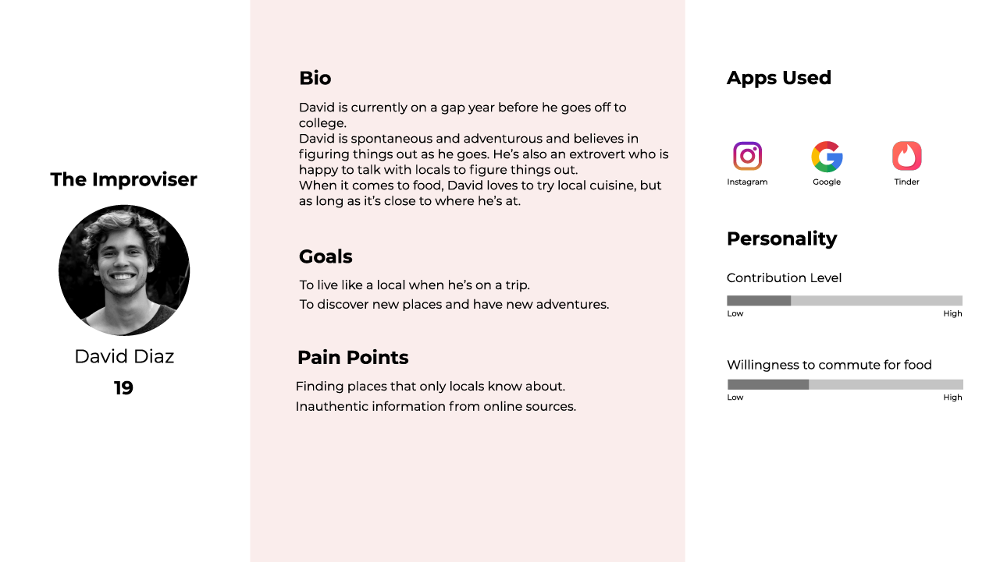
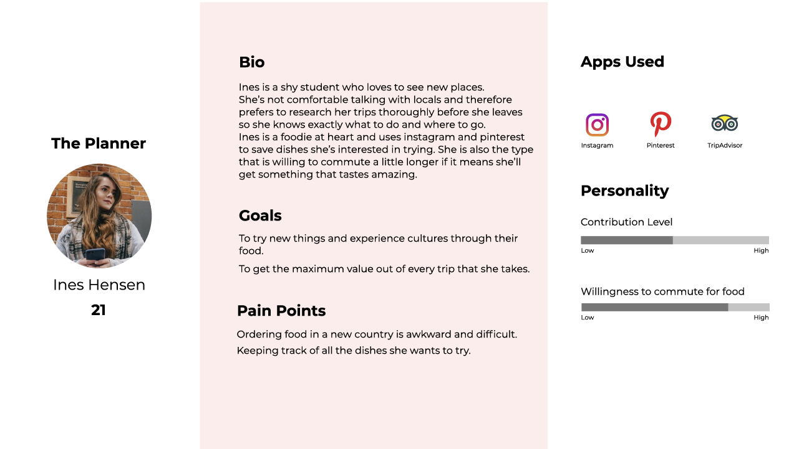
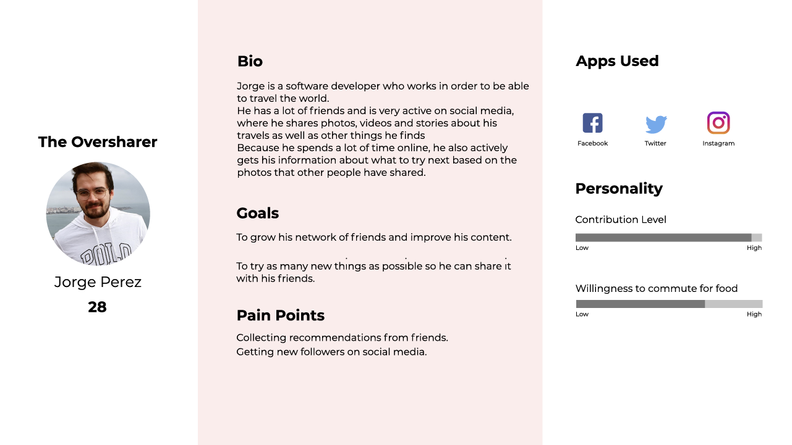
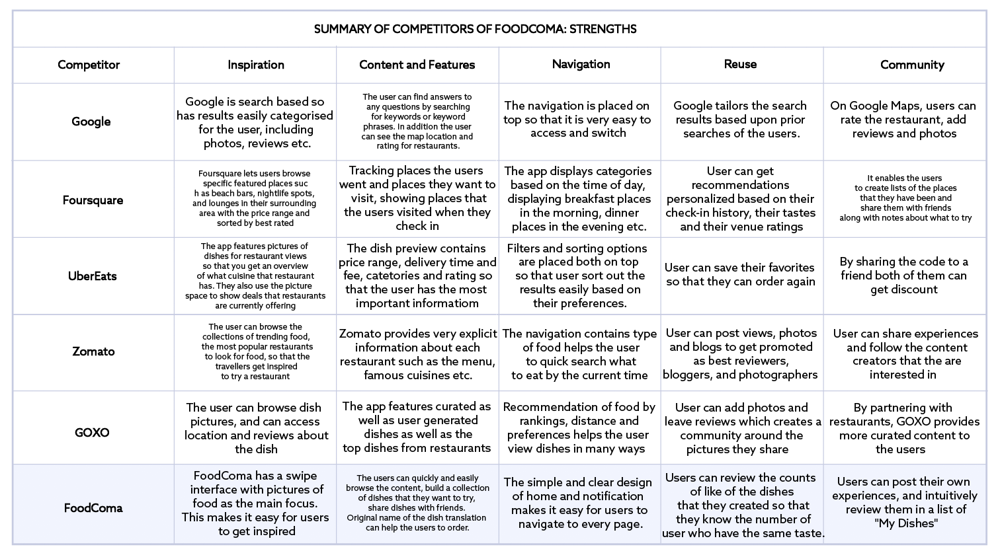
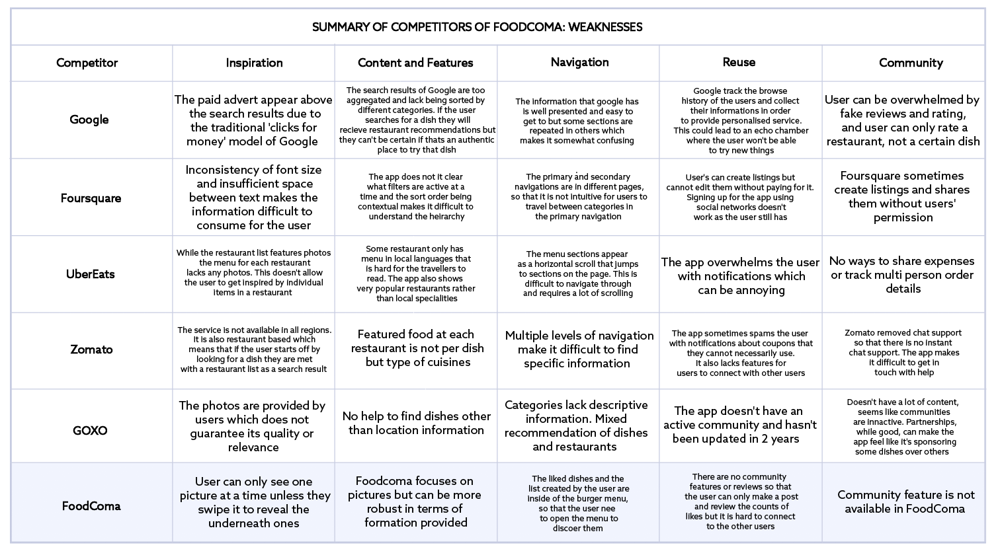
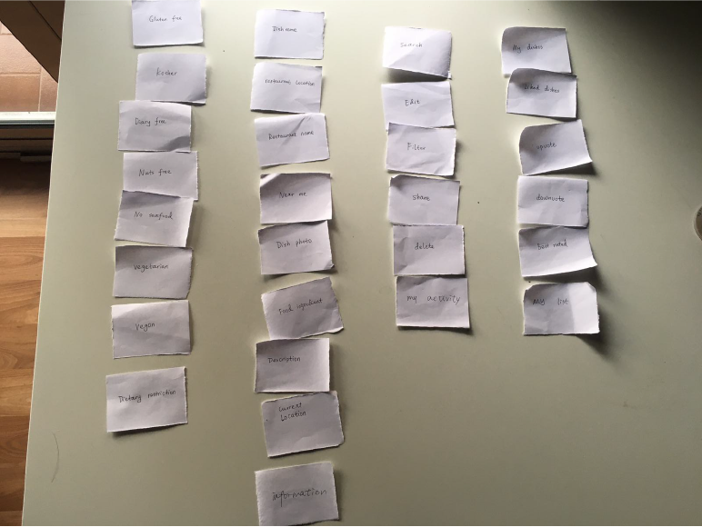
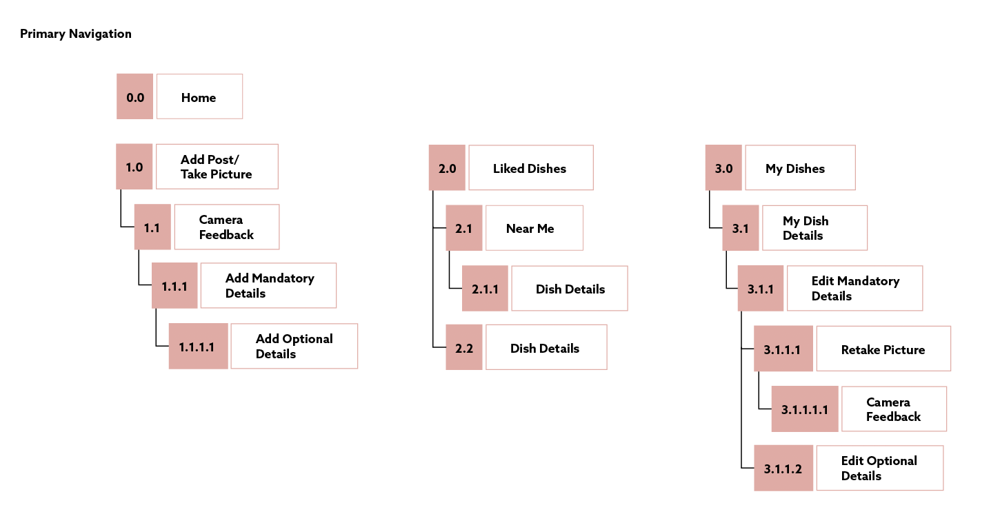

Personas
Speaking with the travellers helped us consolidate their behaviours into our 3 main personas.
  Competitor Analysis
We studied competitors in the food space to try and understand how they handled ordering and seraching for food.
 Card Sorting
We asked users to help us categorise content to form the basis of our app architecture.
Sitemap
We iterated over our app architecture until we had the correct mixture of simplicity of navigation while also offering all the features necessary for an application.
